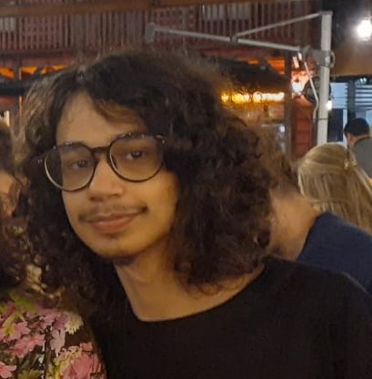

Carlos Eduardo Prezzi
Tive meu primeiro contato com computadores aos quatro anos de idade e desde então isso se tornou a ferramenta que eu utilizo para lazer, estudo e agora trabalho.
Adoro entender cada vez um pouco mais sobre o que os computadores são capazes e fazem por debaixo dos panos.
Utilizo essa paixão para elaborar projetos que me fazem conhecer ainda mais coisas, sempre potencializando todos projetos futuros.